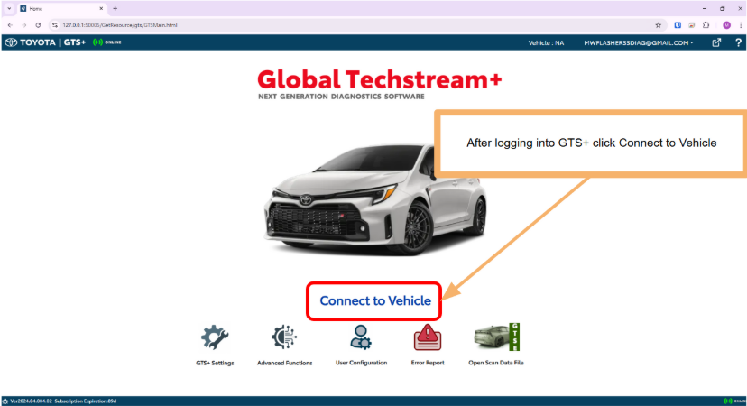

OEM Library > Toyota & Lexus
Job Aids & Position Statements
Service Information Access:
https://techinfo.toyota.com
Use Bitwarden "Multi-User Access" if you do not have a personal GTS+ sub.
https://techinfo.toyota.com
Use Bitwarden "Multi-User Access" if you do not have a personal GTS+ sub.
Search Queries (Copy & Paste into TIS)
Seat Weight Sensor (OCS) Initialization: Search for collision requirements.
"The vehicle is brought to a workshop for repair due to an accident or collision"
Link: Toyota/Lexus SWS Reference "Any Collision" Sheet
Front Recognition Camera: Search for suspension related requirements.
"Parts relating to the tires or suspension are replaced or adjusted"
Check both RM (Repair Manual) and New Car Features manual.
[Image: Service Info Search Result Example]
Brand Specific Terminology
- Adaptive Cruise Control (ACC)
- Millimeter wave Radar, Dynamic Radar Cruise Control (DRCC)
- Blind Spot Monitor (BSM)
- Blind Spot Warning, Rear Cross Traffic Alert
- Lane Keep Assist (LKAS)
- Front Recognition Camera, Lane Departure Alert
- Intuitive Park Assist (IPA)
- Ultrasonic Sensors, Clearance Warning
- Panoramic View Monitor (PVM)
- 360 Cameras, Television Camera
- Occupant Classification System (OCS)
- Seat Weight Sensor (SWS)
NOTE: Toyota/Lexus may use "beam axis adjustment" rather than "calibration."
Scan Tool & VCI Usage
Hardware Setup
- Laptop: Dell (Partition: Toyota)
- VCI: Cardaq 3+ or Mongoose Cable
- Access: Single-User Access (Must use personal GTS+ Sub)
Software: GTS+
License Warning:
The license can only be active on 1 PC partition at a time.
Hotline License Release: (877) 762-7666
The license can only be active on 1 PC partition at a time.
Hotline License Release: (877) 762-7666
Update Method: Run "Agent Lite" application.
Exceptions: Toyota Supra
The Supra uses BMW software logic.
- Software: Toyota ISTA (Found in SI).
- VCI: Volvo VOE cable or BMW ICOM.
Scanning Workflow
-
Obtaining and printing a scan in GTS+Connect to the vehicle

-
Select OptionsPrint to PDF. Label:
Invoice# Scan before clear. -
Clear DTCsNote: RoB (Record of Behavior) data only clears if additional info was retrieved.
-
Final Health CheckRequired to scan all modules again. Print to PDF. Label:
Invoice# Scan after clear.
[Image: GTS+ Health Check Screen]
Calibration References & Calculators
Setup Photos: 360 Camera
Type: Mats or Pedestrian Boards (Check Collabtic Article).
[Front Cam Mat Setup]
[Rear Cam Mat Setup]
[Adjustment Screen - Before]
[Adjustment Screen - After]
Setup Photos: Backup Camera (Non-360)
[Image: Backup Camera Setup & Adj Screen]
Immobilizer & Security (NASTF)
Billing Info:
Buying a PIN = $100 Line Item + Labor Line.
Buying a PIN = $100 Line Item + Labor Line.
VSP / LSID Requirements
When purchasing PIN codes via NASTF VSP, you must complete the D1 Form.
Required Photos for D1 Form:
- Vehicle Owner's Driver's License
- Vehicle Title or Insurance (Name must match DL)
- Vehicle with License Plate visible
- VIN Tag
- Odometer (if available)
Programming Notes
- All Keys Lost (AKL): Requires LSID + D1 + PIN Purchase.
- Add Key: Does NOT require LSID if a programmed key is present.